SunaRi Beach Resort Selayar is a beachfront resort on Sunari Beach, on the west coast of the Selayar Islands, South Sulawesi. Every evening the sun sets right in front of our beach, over a calm open sea.
Choose from five types of wooden bungalows, each with a private terrace: a stilt house on the shoreline, A-frame bungalows with semi-outdoor bathrooms, and a two-storey family bungalow for up to 8 guests. Every room has air conditioning and Wi-Fi, and breakfast is included.
Our beach is shallow and safe for children. In the late afternoon, paddle a kayak into the sunset, ride the giant swing, then end the day with grilled fish at Bajoy Beach Resto.
“Come for the sunset, stay for the stillness.”
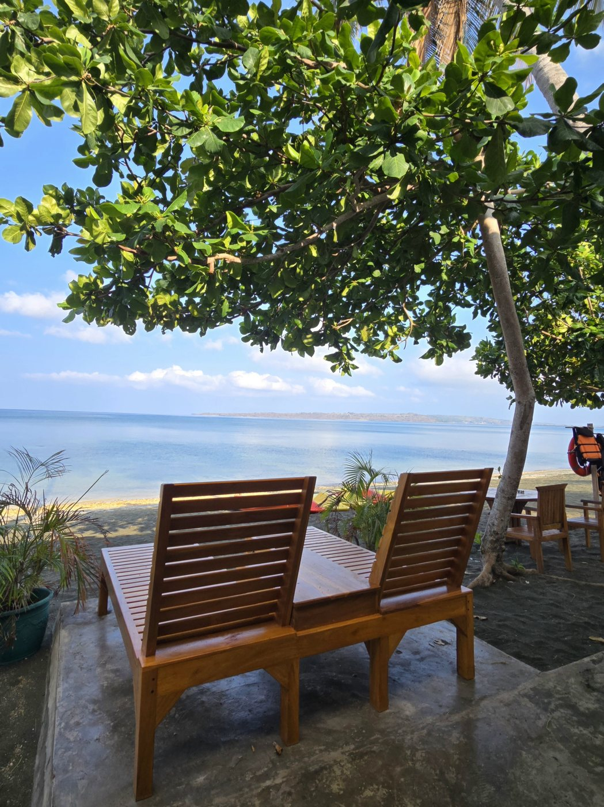
SunaRi in numbers
5
Bungalow types
8
Max. guests / Family
4
Island tour options
3
Routes to Selayar
SunaRi Beach Resort Selayar · Guest Guide3
02Key information
At a glance
Keep this page handy. Everything our guests ask most often is right here.
Address
Jl. Poros Benteng – Appatana KM 14, Dusun Tile-Tile Utara, Desa Patikarya, Bontosikuyu District, Selayar Islands Regency, South Sulawesi, Indonesia
Beach
Sunari Beach, west coast of Selayar Island. Shallow & safe for children
Check-in / out
Check-in from 2:00 pm · Check-out by 12:00 noon (WITA, GMT+8)
Room rates
From IDR 900,000 /night, breakfast included. Full list in chapter 03
Included
Breakfast for every room type · air conditioning · Wi-Fi · private terrace
Room availability depends on your dates. Message us on WhatsApp to check availability & confirm the latest rates.
SunaRi Beach Resort Selayar · Guest Guide4
03Rooms
Five bungalow types
Every bungalow is built of wood with a private terrace. All types include breakfast, air conditioning and Wi-Fi.
Room type
Capacity
Bed
Highlights
Rate / night
Standard Bungalow
2 guests (max. 3)
Queen
Spacious sea-view terrace, bamboo bathroom
IDR 900,000
VIP Standard Bungalow
2 guests (max. 3)
King
Beachfront stilt house, terrace facing the sunset
IDR 1,000,000
Superior Bungalow
2 guests (max. 3)
King
A-frame with loft, TV, semi-outdoor bathroom
IDR 1,500,000
VIP Superior Bungalow
2 guests (max. 3)
King
Top category: bathtub, hot water, TV, minibar
IDR 2,500,000
Family Superior Bungalow
6 guests (max. 8)
Large + 4 mattresses
2 floors, bathroom on each floor
IDR 2,500,000
Rates are per room per night and include breakfast. Extra beds are charged separately.
In every room
Breakfast
Air conditioning
Wi-Fi
Private terrace with lounge chairs
Coffee/tea & kettle
Work/vanity desk
Blackout curtains
Extra pillows & blankets
En-suite bathroom, western toilet
Toiletries & towels
Ironing (on request)
Extra bed (paid)
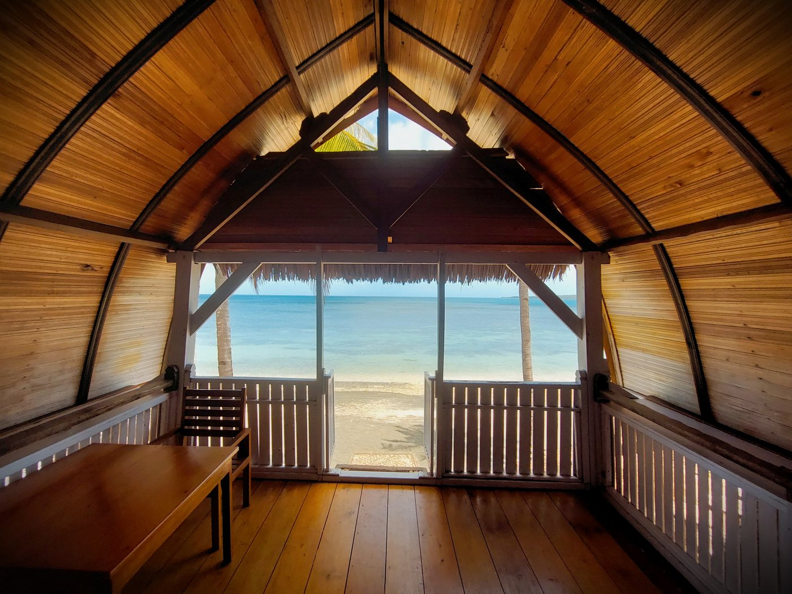
Extra beds: 1 extra bed for Standard, VIP Standard, Superior & VIP Superior (max. 3 guests). 2 extra beds for Family Superior (max. 8 guests). The extra-bed charge is confirmed when you book.
A cool, clean wooden bungalow with a high ceiling and a spacious private terrace facing the sea. Enjoy your morning coffee watching the waves from a lounge chair, then stroll to the beach to wait for the sunset. The en-suite bathroom has bamboo walls and a natural stone floor.
A thatched-roof stilt house by Sunari Beach, more spacious than the Standard Bungalow. The private terrace faces the setting sun, and in the beachfront units the sunset is right in front of you. A warm wooden room with soft wall lights and a washbasin area with clothes rack.
A wooden A-frame bungalow with a loft under a soaring timber ceiling, more spacious than the Standard and VIP Standard. Its highlight is a semi-outdoor bathroom with rain shower, surrounded by a green garden and open sky. The private wooden terrace looks out to the sea or garden.
Room facilities
Breakfast
King bed
TV
Loft
Air conditioning
Wi-Fi
Coffee/tea & kettle
Work/vanity desk
Blackout curtains
Semi-outdoor bathroom
Rain shower
Toiletries & towels
Private terrace & lounge chairs
Ironing (on request)
Extra bed (max. 1)
SunaRi Beach Resort Selayar · Guest Guide8
03 · dRooms
VIP Superior Bungalow
Rate IDR 2,500,000 /nightCapacity 2 adults (max. 3)Bed KingExtra Bathtub · hot water
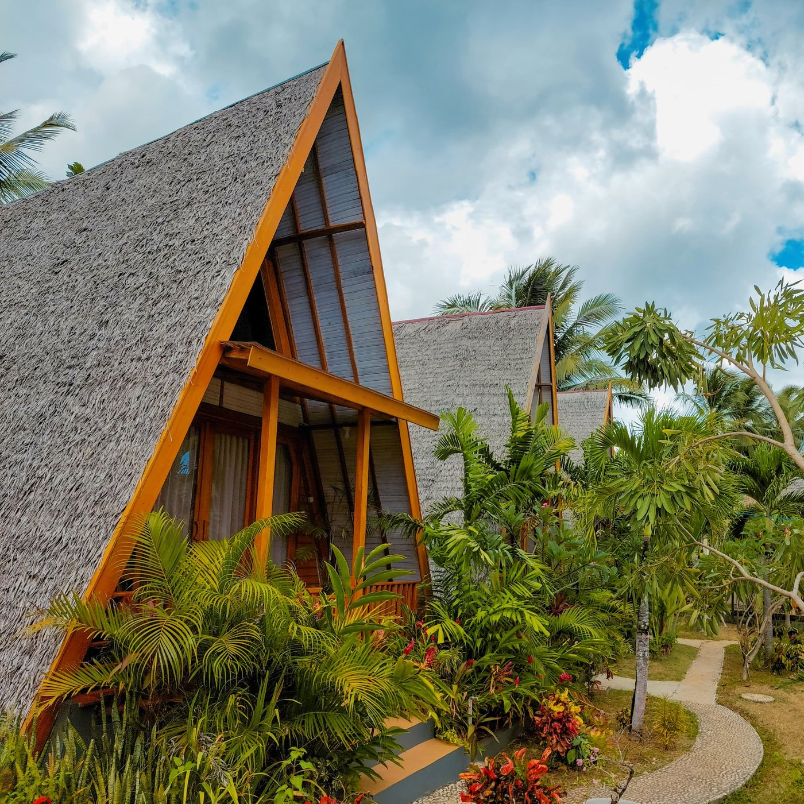
Our highest room category.
A thatched A-frame bungalow with a loft and a triangular window that lets in the morning light. The glass-roofed semi-outdoor bathroom has a bathtub, rain shower and hot water, the only room type with hot water, so you can enjoy a warm soak with coconut palms right above you.
SunaRi's largest bungalow, ideal for big families. The ground floor sleeps 2–3 guests in a large bed, the upper floor sleeps 4–5 guests on four mattresses under a high timber roof. Each floor has its own toilet and bathroom. A private terrace with lounge chairs, perfect for gathering before sunset.
Room facilities
Breakfast
2 floors
Bathroom on both floors
Air conditioning
Wi-Fi
Coffee/tea & kettle
Work/vanity desk
Blackout curtains
Extra pillows & blankets
Toiletries & towels
Private terrace & lounge chairs
Ironing (on request)
Extra bed (max. 2)
SunaRi Beach Resort Selayar · Guest Guide10
04Restaurant
Bajoy Beach Resto
SunaRi's beachfront restaurant, serving grilled fish & seafood every day. Breakfast for hotel guests is served here.
Opening hours
Hotel guests
7 am – 9 pm
Non-staying visitors
7 am – 7 pm
Sunset Dinner
A beachside dinner of grilled fish & seafood as the sun goes down. Book at least one day ahead via WhatsApp +62 821-8903-3044.
Daily menu
Food
Nasi Goreng Sunari
IDR 45,000
Nasi Goreng Seafood
IDR 45,000
Nasi Goreng Egois
IDR 45,000
Nasi Goreng Kampung
IDR 45,000
Ayam Lalapan
IDR 50,000
Ayam Bakar
IDR 50,000
Beef Sandwich
IDR 30,000
Beef Sandwich D.
IDR 40,000
Egg Sandwich
IDR 25,000
Egg Sandwich D.
IDR 35,000
Indomie Goreng
IDR 20,000
Indomie Kuah
IDR 20,000
Drinks
Chocolate M.S
IDR 25,000
Oreo M.S
IDR 25,000
Orange Punch
IDR 25,000
Watermelon L.M
IDR 25,000
Green Tea
IDR 25,000
Hot Tea
IDR 10,000
Ice Tea
IDR 20,000
Black Coffee
IDR 20,000
Coffee Milk
IDR 20,000
Milk Tea
IDR 25,000
Original Coconut
IDR 25,000
Saronso
IDR 25,000
SunaRi Beach Resort Selayar · Guest Guide11
04Restaurant
Snacks, juices & drinks
Snack
French Fries
IDR 25,000
Toast
IDR 25,000
Banana Roll
IDR 25,000
Fried Cassava
IDR 25,000
Fried Banana
IDR 25,000
Soft Drink
Coke
IDR 15,000
Fanta
IDR 15,000
Sprite
IDR 15,000
Fresh Tea
IDR 15,000
Pulpy
IDR 15,000
Mineral Water
IDR 10,000
Juice
Avocado
IDR 25,000
Watermelon
IDR 25,000
Melon
IDR 25,000
Mango
IDR 25,000
Dragon Fruit
IDR 25,000
Soursop Fruit
IDR 25,000
Apple
IDR 25,000
Orange
IDR 25,000
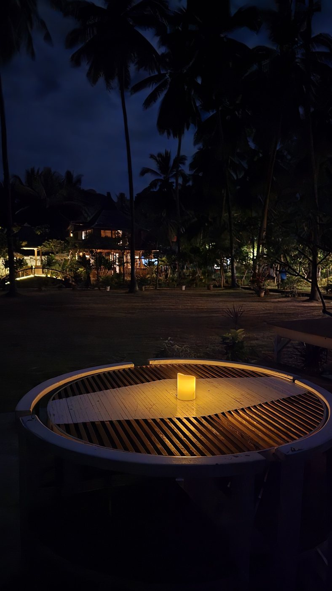
Prices may change without notice. The grilled fish & seafood menu for the Sunset Dinner is confirmed when you book.
SunaRi Beach Resort Selayar · Guest Guide12
05Activities
Things to do at Sunari Beach
No need to go far: there is plenty to enjoy without leaving the resort.
Kayak rental
The water at Sunari Beach is calm and shallow, best just before sunset.
Single kayak
IDR 50,000
Double kayak
IDR 100,000
Giant swing
A favourite photo spot on the shore: swing with the sunset right in front of you. Free of charge.
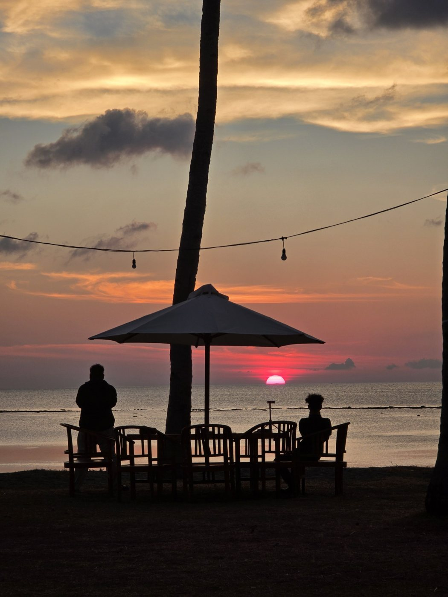
Watching the sunset
The sun sets right in front of the beach, around 5:50–6:00 pm. Most beautiful April–December.
Relax & swim
A shallow beach that is safe for children. Lounge chairs under the almond trees, with Gusung Island across the water.
SunaRi Beach Resort Selayar · Guest Guide13
05Activities
Snorkeling gear rental
Discover Selayar's underwater world with quality gear that is clean and well maintained.
Equipment
Snorkel
TUSA Hyperdry Snorkel
Mask
TUSA Splash
Fins
Cowfish / Alba
Buoyancy
Life jacket
Rental packages
Package
Price
Full set Snorkel + mask + fins + life jacket
IDR 50,000 /set /day
Without life jacket Snorkel + mask + fins
IDR 40,000 /set /day
Single items
Item
Price
Snorkel
IDR 15,000 /day
Mask
IDR 15,000 /day
Fins
IDR 15,000 /day
Life jacket
IDR 15,000 /day
Rental terms
Payment is made upfront, before the gear is used.
Damage or loss is the renter's responsibility and will be charged at replacement cost.
Life jackets are mandatory for guests who are not confident swimmers.
Rentals are subject to the gear available on site.
Snorkeling gear is already included in every island tour (chapter 07). Book via our WhatsApp catalogue: wa.me/p/28508148958779838
SunaRi Beach Resort Selayar · Guest Guide14
06Events
Venue hire
Meetings, company gatherings, celebrations and semi-formal dinners on Sunari Beach.
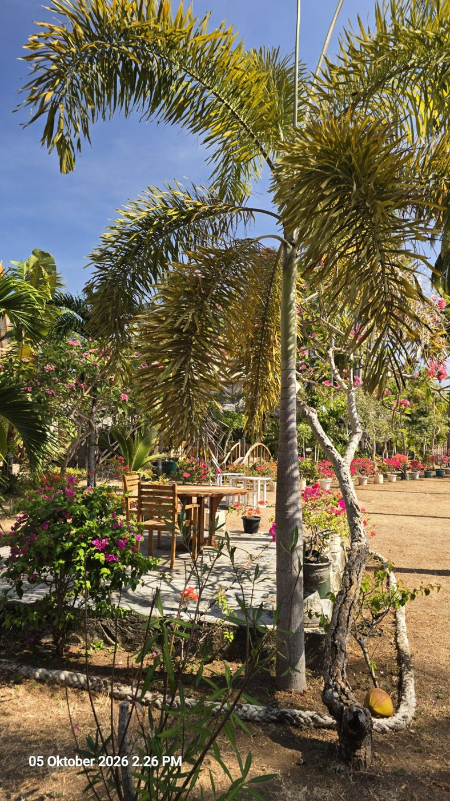
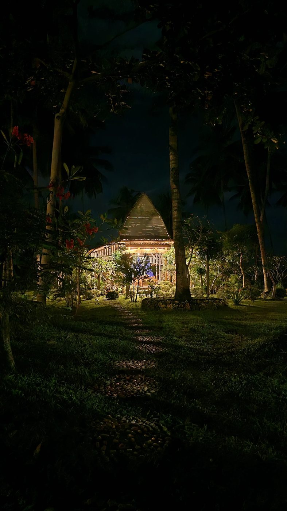
Our venues
Hire hours 8 am – 5 pm
Capacity 60–80 guests
Wantilan
IDR 2,500,000
Our calm, well-arranged main hall, ideal for semi-formal dinners, meetings and presentations.
Capacity 40–60 guests
Beach Club
IDR 2,000,000
A relaxed beachfront setting, ideal for casual lunches or dinners, birthday parties and similar events.
Capacity 100 guests
Field & Stage
IDR 2,000,000
A wide open space, ideal for games, gatherings and all kinds of outdoor events.
All three areas can be hired together for one event, each at its own rate.
What's included
Venue, tables & chairs
Projector, screen & speakers
Electricity
Area cleaning
SunaRi Beach Resort Selayar · Guest Guide15
06Events
Event terms
Food & drinks
You are welcome to bring your own food & tableware
Food must arrive ready to serve
Tableware hire
From IDR 1,500,000, service included
Serving platters, plates, spoons, forks & more
Price depends on the number of guests
Decoration
Allowed, including outside vendors
Post-event clean-up can be done by the organiser
Overtime
After 5 pm a fee of IDR 500,000 applies, or as agreed
Sound system
Allowed until 10 pm at the latest, out of respect for staying guests
Accommodation
Event participants receive corporate room rates
No minimum number of rooms
Booking & payment
Book at least 3 days before the event
50% deposit on booking
Balance paid after the event
Rescheduling possible within 6 months; payments are non-refundable
We are happy to tailor a package to your event. WhatsApp +62 821-8903-3044 or see our catalogue: wa.me/p/28083493487968437
SunaRi Beach Resort Selayar · Guest Guide16
07Island tours
Island hopping from SunaRi
Explore Selayar's exotic islands straight from the resort. Every private tour includes the boat, snorkeling gear, a lunchbox & entrance tickets.
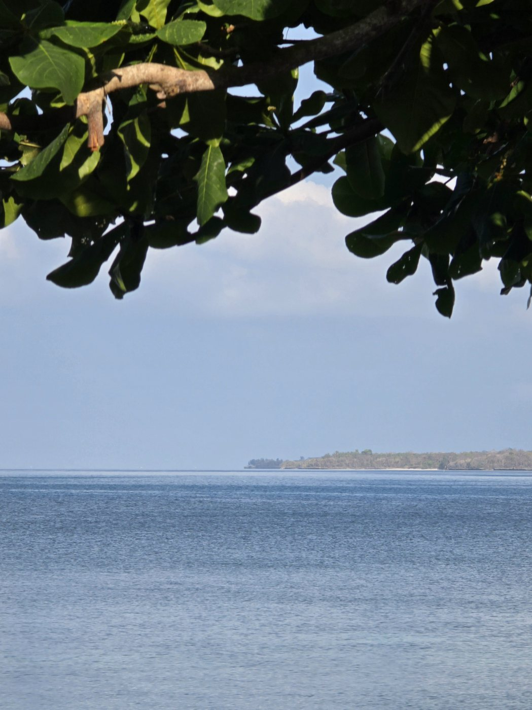
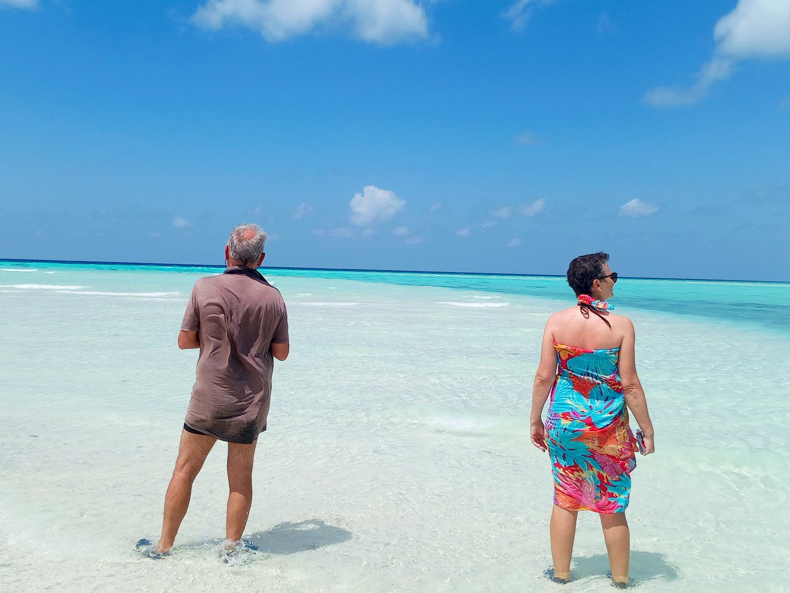
Left: Gusung Island, seen straight from Sunari Beach. Right: the turquoise water of Bahuluang Island.
Package
Type
Duration
From
Exotic Gusung Island Trip
Private · boat
1 day (7 am–3 pm)
IDR 333,750 /pax*
Exotic Bahuluang Island Trip
Private · car + boat
1 day (7 am–4 pm)
IDR 652,500 /pax*
Exotic Polassi & Tambolongan Trip
Private · car + boat
1 day (7 am–4:30 pm)
IDR 847,500 /pax*
Open Trip: Explore Selayar Island
Shared · min. 8 guests
2 days
IDR 3,000,000 /pax
*Per-person price for a group of 8 without a guide. Full prices by group size are on the following pages.
Before you go: breakfast at SunaRi is served from 7 am. Itineraries may be adjusted by the captain & guide for weather, sea and tide conditions.
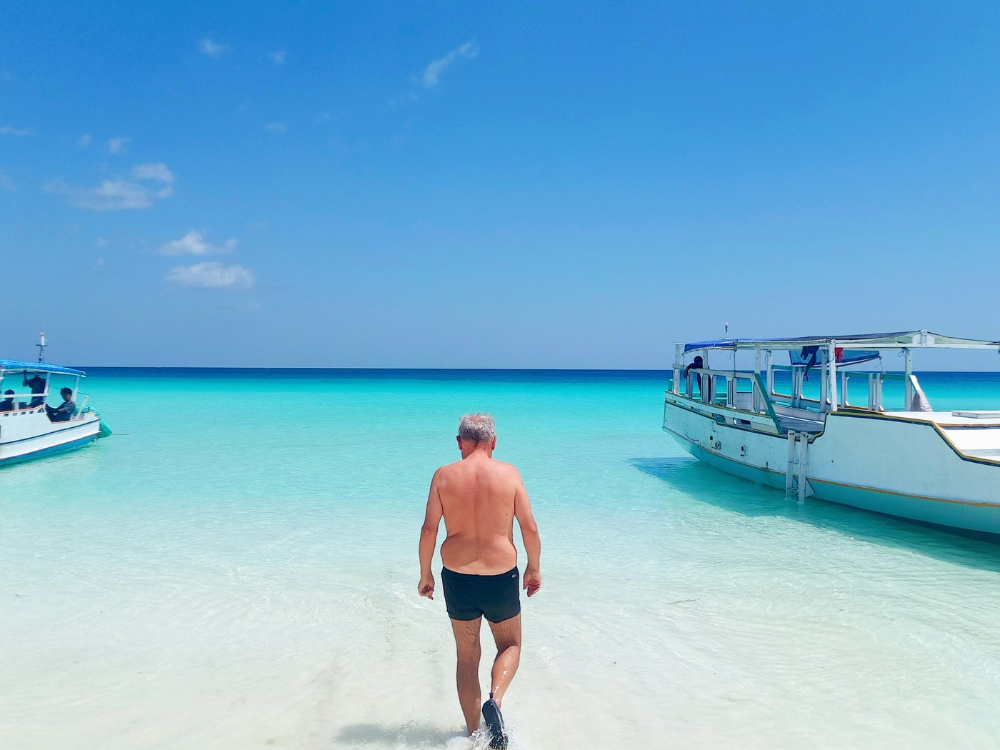
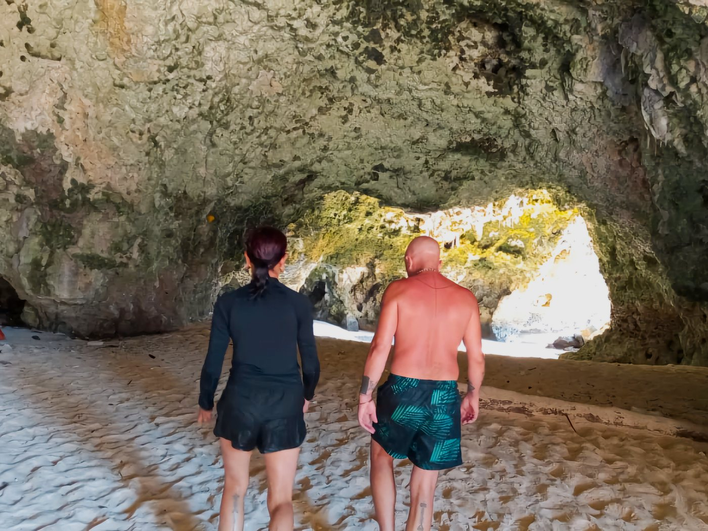
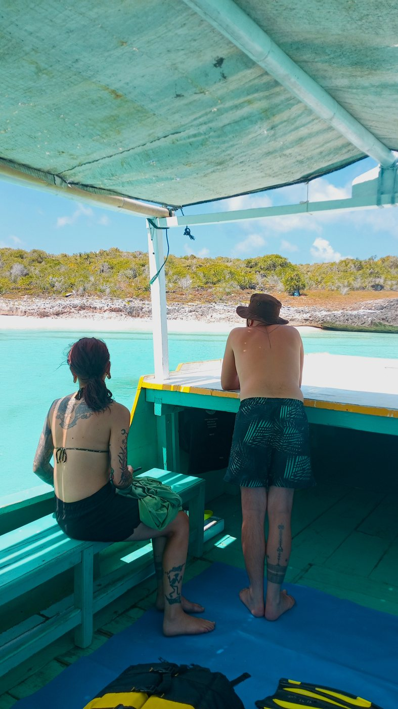
SunaRi Beach Resort Selayar · Guest Guide17
07Island tours
Exotic Gusung Island Trip
Private one-day island hopping & snorkeling, by boat straight from SunaRi.
Snorkeling Liang Kareta & JekneiaBeaches Liang Kareta · Bone MaleaCave Balojaha
Tour itinerary
07.00–08.00
Preparation & breakfast at SunaRi.
08.00–08.30
Depart by private chartered boat.
08.30–09.30
Snorkeling at Liang Kareta: coral reefs & marine life.
Snorkeling at the Coral Tomb: unique coral formations.
11.00–12.00
Bahuluang Sandbar (depending on the tide).
12.00–13.00
Bahuluang Beach & lunch (lunchbox).
13.00–14.00
Lipang Cave & exotic landscapes.
15.00–16.00
Return to SunaRi. Tour ends.
Price per person
Group
Without guide
With guide
1 guest
IDR 2,640,000
IDR 3,540,000
2 guests
IDR 1,440,000
IDR 1,890,000
3 guests
IDR 1,040,000
IDR 1,340,000
4 guests
IDR 840,000
IDR 1,065,000
5 guests
IDR 900,000
IDR 1,080,000
6 guests
IDR 790,000
IDR 940,000
7 guests
IDR 711,429
IDR 840,000
8 guests
IDR 652,500
IDR 765,000
Vehicles: 1–4 guests 1 car · 5–8 guests 2 cars.
Included
Private car (resort ⇄ Turungan)
Private boat charter
Snorkeling gear + life jacket
Lunchbox + mineral water
Entrance tickets
Driver & fuel
Local guide (with-guide option)
Not included
Personal expenses & shopping
Additional photo/video documentation
Optional extra activities
Tips for driver/captain/guide (voluntary)
SunaRi Beach Resort Selayar · Guest Guide19
07Island tours
Exotic Polassi & Tambolongan Trip
Nane Hill trekking, island hopping & snorkeling.
Trekking Nane Hill ±15 minSnorkeling TambolonganIconic Tambolongan Sandbar
Tour itinerary
07.00–08.00
Breakfast at SunaRi & preparation.
08.00–09.00
Private car to Turungan Village.
09.00–10.30
Cross to Polassi Island.
10.30–11.45
Nane Hill trek: ocean panorama & photos.
11.45–13.00
Nane Hill Beach, lunch & rest.
13.00–14.00
Tambolongan beach & snorkeling.
14.00–15.00
Tambolongan Sandbar & free time.
15.00–16.30
Return to SunaRi. Tour ends.
Price per person
Group
Without guide
With guide
1 guest
IDR 4,147,500
IDR 5,047,500
2 guests
IDR 2,197,500
IDR 2,647,500
3 guests
IDR 1,547,500
IDR 1,847,500
4 guests
IDR 1,222,500
IDR 1,447,500
5 guests
IDR 1,207,500
IDR 1,387,500
6 guests
IDR 1,047,500
IDR 1,197,500
7 guests
IDR 933,214
IDR 1,061,786
8 guests
IDR 847,500
IDR 960,000
Vehicles: 1–4 guests 1 car · 5–8 guests 2 cars.
Included
Private car (resort ⇄ Turungan)
Private boat charter
Snorkeling gear + life jacket
Lunchbox + mineral water
Nane Hill & attraction tickets
Driver & fuel
Local guide (with-guide option)
Not included
Personal expenses & shopping
Additional photo/video documentation
Optional extra activities
Tips for driver/captain/guide (voluntary)
SunaRi Beach Resort Selayar · Guest Guide20
07Island tours
Open Trip: Explore Selayar Island
A 2-day shared marine excursion: discover South Sulawesi's hidden paradise.
Price IDR 3,000,000 /paxDuration 2 daysMin. quota 8 guestsMeeting point pick-up in Selayar / harbour
Day 1 · Gusung Island
Pick-up, safety briefing & snorkeling gear
Balojaha Beach: white sand & turquoise water
Liang Tarrusu Beach: iconic limestone cliff
Bone Malea Beach: lunchbox on the shore
Liang Kareta Beach: swimming & snorkeling
Return to the harbour / resort
Day 2 · Bahuluang & Polassi
Pick-up & transfer to the harbour
Nane Hill (Polassi Island): 360° panorama
Pasi Timbul Polassi sandbar (tide permitting)
Lunch on the island shore
Liang Lipang (Bahuluang Island): coastal cave
Snorkeling at Makam Karang
Photo & video handover, farewell
Included
Meeting-point/harbour transfers in Selayar
Shared island-hopping boat for 2 days
Mask, snorkel & life jacket
Tickets & permits for all spots
Lunchboxes & mineral water for 2 days
Licensed local guide
Photo & underwater video documentation
Not included
Flights/ferry to Selayar
Accommodation (stay with us at SunaRi)
Personal expenses
Voluntary tips for crew & guide
What to bring
Swimwear & a change of clothes
Reef-safe sunscreen
Sunglasses & sun hat
Dry bag for phone/camera
Water shoes / anti-slip sandals
Terms: minimum 8 guests per departure (if not met: price adjustment, rescheduling or a full refund as agreed). Routes may change due to weather or swell. Mobile signal is limited on the outer islands. Nane Hill requires moderate fitness.
SunaRi Beach Resort Selayar · Guest Guide21
08Getting here
Three ways to SunaRi
From Makassar, Selayar can be reached by air, by road + ferry, or by direct ship.
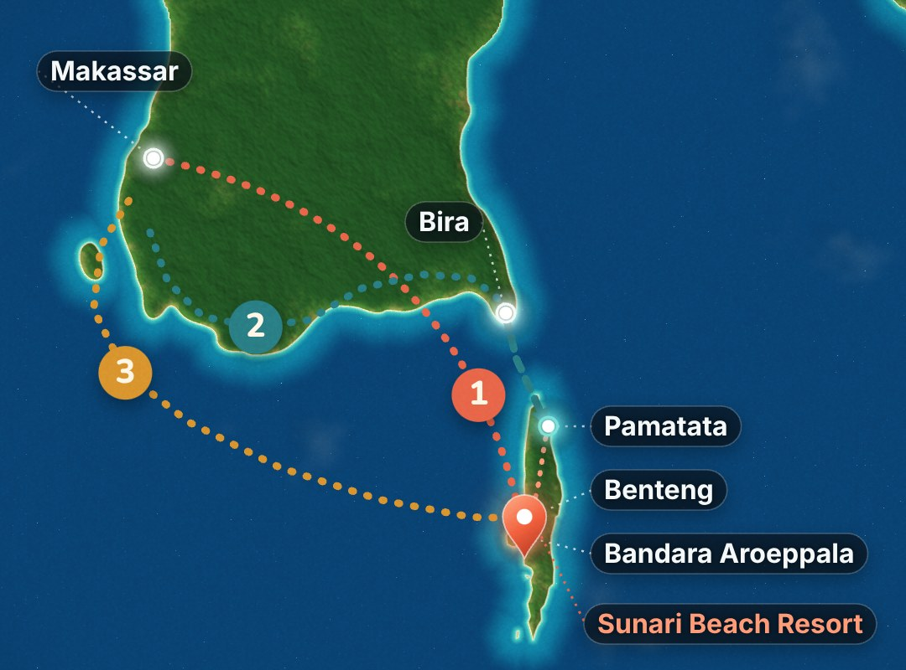
1By air · fastest
Makassar (Sultan Hasanuddin) → H. Aroeppala Airport±45 min
Airport → SunaRi (car)±10–15 min
Check airline schedules 7 days ahead.
2Road & ferry
Malengkeri Terminal → Bira Harbour±4–5 hrs
Ferry Bira → Pamatata (ASDP)±2 hrs
Pamatata → SunaRi±1–1.5 hrs
Morning & midday crossings.
3Direct ship
KM Dharma Kartika III: Makassar → Benteng±10–11 hrs
Benteng → SunaRi (car)±20–30 min
Overnight sailing. Not daily.
SunaRi Beach Resort Selayar · Guest Guide22
08Getting here
Pick-up & transfers
Private vehicles exclusively for your group, including driver, fuel & parking.
Local Selayar shuttle (one way)
Route
1–4 guests (1 car)
5–8 guests (2 cars)
H. Aroeppala Airport ↔ SunaRi
IDR 150,000
IDR 300,000
Benteng Harbour ↔ SunaRi
IDR 200,000
IDR 400,000
Pamatata Harbour ↔ SunaRi
IDR 400,000
IDR 800,000
Makassar ↔ SunaRi transfer (total per group)
Option A · Full private car
Direct private car including the ferry crossing. Most comfortable.
Guests
Vehicles
Total
1 guest
1 car
IDR 1,950,000
2 guests
1 car
IDR 2,000,000
3 guests
1 car
IDR 2,050,000
4 guests
1 car
IDR 2,100,000
5 guests
2 cars
IDR 4,050,000
6 guests
2 cars
IDR 4,100,000
7 guests
2 cars
IDR 4,150,000
8 guests
2 cars
IDR 4,200,000
Option B · Premium bus + shuttle
Sleeper/executive bus Makassar–Pamatata + private shuttle. Better value.
Guests
Service
Total
1 guest
1 car + bus
IDR 1,100,000
2 guests
1 car + bus
IDR 1,550,000
3 guests
1 car + bus
IDR 2,000,000
4 guests
1 car + bus
IDR 2,450,000
5 guests
2 cars + bus
IDR 3,550,000
6 guests
2 cars + bus
IDR 4,000,000
7 guests
2 cars + bus
IDR 4,450,000
8 guests
2 cars + bus
IDR 4,900,000
Terms: 1 car carries up to 4 guests + 4 medium suitcases. Ferry & bus tickets are charged per person at official operator rates. Please confirm your arrival time & passenger details at least one day ahead via WhatsApp +62 821-8903-3044.
SunaRi Beach Resort Selayar · Guest Guide23
09Reservations
How to book
Just 3 steps on WhatsApp, no other app needed.
1
Message us
WhatsApp +62 821-8903-3044.
2
Send your details
Check-in & check-out dates, number of guests (adults & children), room type, and whether you need a transfer.
3
Pay & relax
We send rates & availability → pay by transfer & send the receipt → booking confirmed.
Would you also like a Sunset Dinner, an island tour or a transfer? Mention it in the same chat and we will arrange everything.
Frequently asked questions
Check-in & check-out times?
Check-in from 2 pm, check-out by 12 noon (WITA).
Is breakfast included?
Yes, for every room type.
Which room has hot water?
Only the VIP Superior Bungalow (bathtub & hot water).
Can I add an extra bed?
Yes, for a fee: 1 for 2-guest rooms, 2 for the Family Superior.
Is it safe for children?
Sunari Beach is shallow & safe for kids.
Can visitors use the restaurant?
Yes, Bajoy Beach Resto is open 7 am–7 pm for non-staying visitors.
Is the giant swing paid?
No, the giant swing is free.
Can you pick me up at the airport?
Yes, for a fee. See rates in chapter 08.
SunaRi Beach Resort Selayar · Guest Guide24
See you at Sunari Beach.
Reservations & information
WhatsApp +62 821-8903-3044
Instagram @sunaribeachresortselayar
Jl. Poros Benteng – Appatana KM 14, Dusun Tile-Tile Utara, Desa Patikarya, Bontosikuyu District, Selayar Islands, South Sulawesi, Indonesia
Google Maps: maps.app.goo.gl/iUWWHNCT7Vyu4i537
Information & prices subject to change · 2026 Edition